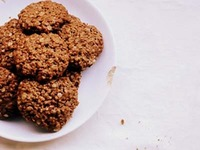

Receta de Galletas de Avena
Ingredientes
-
- 115 gramos de copos de avena
- 50 gramos de harina
- 75 gramos de azúcar
- 50 ml. de aceite
- 1 taza de harina
- 1 pizca de sal
- 1 huevo
- 1 cdita. de esencia de vainilla
Preparación
-
1. Batir el huevo y mezclarlo con el azúcar hasta que quede
una preparación cremosa
2. Agregar el aceite y la esencia de vainilla y unir bien
3. Incorporar la harina, la pizca de sal y los copos de avena. Unir bien con las manos hasta que quede una masa compacta.
4. Llevar a la heladera unos 20 minutos hasta que la masa para las galletas esté bien fresca
5. Con las manos untadas con un poco de aceite, formar bolitas y aplastarlas formando las galletas de avena. Colocarlas en una fuente de horno. No hace falta que tenga manteca o aceite
6. Hornear unos 10-12 minutos a 180°C, hasta que las galletas de avena vean doradas por debajo